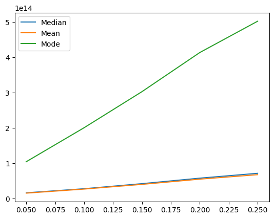

import numpy as np
import pandas as pd
import matplotlib.pyplot as plt
import seaborn as snsModul 3 Sains Data: Encoding Data Kategorik dan Imputasi Data
Kembali ke Sains Data
Install scikit-learn dengan:
!pip install scikit-learn
Lalu import sklearn:
import sklearnImport Dataset
Untuk praktikum kali ini, kita akan menggunakan dataset “California Housing Prices” (housing.csv) yang bisa didownload dari salah satu sumber berikut:
Kemudian, baca sebagai dataframe:
df = pd.read_csv("./housing.csv")Mari kita lihat isinya:
df| longitude | latitude | housing_median_age | total_rooms | total_bedrooms | population | households | median_income | median_house_value | ocean_proximity | |
|---|---|---|---|---|---|---|---|---|---|---|
| 0 | -122.23 | 37.88 | 41.0 | 880.0 | 129.0 | 322.0 | 126.0 | 8.3252 | 452600.0 | NEAR BAY |
| 1 | -122.22 | 37.86 | 21.0 | 7099.0 | 1106.0 | 2401.0 | 1138.0 | 8.3014 | 358500.0 | NEAR BAY |
| 2 | -122.24 | 37.85 | 52.0 | 1467.0 | 190.0 | 496.0 | 177.0 | 7.2574 | 352100.0 | NEAR BAY |
| 3 | -122.25 | 37.85 | 52.0 | 1274.0 | 235.0 | 558.0 | 219.0 | 5.6431 | 341300.0 | NEAR BAY |
| 4 | -122.25 | 37.85 | 52.0 | 1627.0 | 280.0 | 565.0 | 259.0 | 3.8462 | 342200.0 | NEAR BAY |
| ... | ... | ... | ... | ... | ... | ... | ... | ... | ... | ... |
| 20635 | -121.09 | 39.48 | 25.0 | 1665.0 | 374.0 | 845.0 | 330.0 | 1.5603 | 78100.0 | INLAND |
| 20636 | -121.21 | 39.49 | 18.0 | 697.0 | 150.0 | 356.0 | 114.0 | 2.5568 | 77100.0 | INLAND |
| 20637 | -121.22 | 39.43 | 17.0 | 2254.0 | 485.0 | 1007.0 | 433.0 | 1.7000 | 92300.0 | INLAND |
| 20638 | -121.32 | 39.43 | 18.0 | 1860.0 | 409.0 | 741.0 | 349.0 | 1.8672 | 84700.0 | INLAND |
| 20639 | -121.24 | 39.37 | 16.0 | 2785.0 | 616.0 | 1387.0 | 530.0 | 2.3886 | 89400.0 | INLAND |
20640 rows × 10 columns
Ada satu data kategorik, yaitu ocean_proximity. Mari kita liat jenis-jenisnya (kategorinya):
df["ocean_proximity"].value_counts()ocean_proximity
<1H OCEAN 9136
INLAND 6551
NEAR OCEAN 2658
NEAR BAY 2290
ISLAND 5
Name: count, dtype: int64Apakah ada missing value?
df.isna().sum()longitude 0
latitude 0
housing_median_age 0
total_rooms 0
total_bedrooms 207
population 0
households 0
median_income 0
median_house_value 0
ocean_proximity 0
dtype: int64df[df["total_bedrooms"].isna()]| longitude | latitude | housing_median_age | total_rooms | total_bedrooms | population | households | median_income | median_house_value | ocean_proximity | |
|---|---|---|---|---|---|---|---|---|---|---|
| 290 | -122.16 | 37.77 | 47.0 | 1256.0 | NaN | 570.0 | 218.0 | 4.3750 | 161900.0 | NEAR BAY |
| 341 | -122.17 | 37.75 | 38.0 | 992.0 | NaN | 732.0 | 259.0 | 1.6196 | 85100.0 | NEAR BAY |
| 538 | -122.28 | 37.78 | 29.0 | 5154.0 | NaN | 3741.0 | 1273.0 | 2.5762 | 173400.0 | NEAR BAY |
| 563 | -122.24 | 37.75 | 45.0 | 891.0 | NaN | 384.0 | 146.0 | 4.9489 | 247100.0 | NEAR BAY |
| 696 | -122.10 | 37.69 | 41.0 | 746.0 | NaN | 387.0 | 161.0 | 3.9063 | 178400.0 | NEAR BAY |
| ... | ... | ... | ... | ... | ... | ... | ... | ... | ... | ... |
| 20267 | -119.19 | 34.20 | 18.0 | 3620.0 | NaN | 3171.0 | 779.0 | 3.3409 | 220500.0 | NEAR OCEAN |
| 20268 | -119.18 | 34.19 | 19.0 | 2393.0 | NaN | 1938.0 | 762.0 | 1.6953 | 167400.0 | NEAR OCEAN |
| 20372 | -118.88 | 34.17 | 15.0 | 4260.0 | NaN | 1701.0 | 669.0 | 5.1033 | 410700.0 | <1H OCEAN |
| 20460 | -118.75 | 34.29 | 17.0 | 5512.0 | NaN | 2734.0 | 814.0 | 6.6073 | 258100.0 | <1H OCEAN |
| 20484 | -118.72 | 34.28 | 17.0 | 3051.0 | NaN | 1705.0 | 495.0 | 5.7376 | 218600.0 | <1H OCEAN |
207 rows × 10 columns
Perhatikan bahwa tipe datanya adalah int64 atau bilangan bulat.
Dari 20640 baris, ada satu kolom/fitur (total_bedrooms) dengan 207 missing value.
Secara umum, ada dua cara untuk menangani missing value:
Menghapus baris-baris yang memiliki missing value, dengan
df.dropna()Melakukan metode imputasi
Karena banyaknya missing value relatif sedikit, sebenarnya tidak masalah apabila baris-baris tersebut cukup dihapus saja. Namun, kita akan mempelajari metode imputasi.
Encoding Data Kategorik
Sebelum kita membahas metode imputasi, kita akan membahas tentang melakukan “encoding” untuk data kategorik.
Banyak metode sains data / machine learning yang hanya bisa digunakan dengan data numerik. Oleh karena itu, data kategorik perlu diubah terlebih dahulu menjadi data numerik, melakukan yang namanya categorical data encoding
Metode yang sering digunakan adalah one hot encoding. Misalnya ada satu fitur kategorik dengan \(n\) kemungkinan data, bernama \(D_i\) untuk \(i = 1, 2, \dots, n\). Maka fitur tersebut diganti dengan \(n\) kolom baru, misal bernama \(K_i\) untuk \(i = 1, 2, \dots, n\), di mana pada kolom ke-i, isinya adalah
- \(1\), apabila data aslinya pada baris tersebut adalah \(D_i\)
- \(0\) apabila bukan \(D_i\)
from sklearn.preprocessing import OneHotEncoderencoder = OneHotEncoder()hasil_onehot = encoder.fit_transform(df[["ocean_proximity"]])print(encoder.categories_)[array(['<1H OCEAN', 'INLAND', 'ISLAND', 'NEAR BAY', 'NEAR OCEAN'],
dtype=object)]print(encoder.categories_[0])['<1H OCEAN' 'INLAND' 'ISLAND' 'NEAR BAY' 'NEAR OCEAN']kolom_encoding = list(encoder.categories_[0])print(kolom_encoding)['<1H OCEAN', 'INLAND', 'ISLAND', 'NEAR BAY', 'NEAR OCEAN']onehot_array = hasil_onehot.toarray()print(onehot_array)[[0. 0. 0. 1. 0.]
[0. 0. 0. 1. 0.]
[0. 0. 0. 1. 0.]
...
[0. 1. 0. 0. 0.]
[0. 1. 0. 0. 0.]
[0. 1. 0. 0. 0.]]onehot_df = pd.DataFrame(onehot_array, columns=kolom_encoding)onehot_df| <1H OCEAN | INLAND | ISLAND | NEAR BAY | NEAR OCEAN | |
|---|---|---|---|---|---|
| 0 | 0.0 | 0.0 | 0.0 | 1.0 | 0.0 |
| 1 | 0.0 | 0.0 | 0.0 | 1.0 | 0.0 |
| 2 | 0.0 | 0.0 | 0.0 | 1.0 | 0.0 |
| 3 | 0.0 | 0.0 | 0.0 | 1.0 | 0.0 |
| 4 | 0.0 | 0.0 | 0.0 | 1.0 | 0.0 |
| ... | ... | ... | ... | ... | ... |
| 20635 | 0.0 | 1.0 | 0.0 | 0.0 | 0.0 |
| 20636 | 0.0 | 1.0 | 0.0 | 0.0 | 0.0 |
| 20637 | 0.0 | 1.0 | 0.0 | 0.0 | 0.0 |
| 20638 | 0.0 | 1.0 | 0.0 | 0.0 | 0.0 |
| 20639 | 0.0 | 1.0 | 0.0 | 0.0 | 0.0 |
20640 rows × 5 columns
df = pd.concat([df, onehot_df], axis=1)df| longitude | latitude | housing_median_age | total_rooms | total_bedrooms | population | households | median_income | median_house_value | ocean_proximity | <1H OCEAN | INLAND | ISLAND | NEAR BAY | NEAR OCEAN | |
|---|---|---|---|---|---|---|---|---|---|---|---|---|---|---|---|
| 0 | -122.23 | 37.88 | 41.0 | 880.0 | 129.0 | 322.0 | 126.0 | 8.3252 | 452600.0 | NEAR BAY | 0.0 | 0.0 | 0.0 | 1.0 | 0.0 |
| 1 | -122.22 | 37.86 | 21.0 | 7099.0 | 1106.0 | 2401.0 | 1138.0 | 8.3014 | 358500.0 | NEAR BAY | 0.0 | 0.0 | 0.0 | 1.0 | 0.0 |
| 2 | -122.24 | 37.85 | 52.0 | 1467.0 | 190.0 | 496.0 | 177.0 | 7.2574 | 352100.0 | NEAR BAY | 0.0 | 0.0 | 0.0 | 1.0 | 0.0 |
| 3 | -122.25 | 37.85 | 52.0 | 1274.0 | 235.0 | 558.0 | 219.0 | 5.6431 | 341300.0 | NEAR BAY | 0.0 | 0.0 | 0.0 | 1.0 | 0.0 |
| 4 | -122.25 | 37.85 | 52.0 | 1627.0 | 280.0 | 565.0 | 259.0 | 3.8462 | 342200.0 | NEAR BAY | 0.0 | 0.0 | 0.0 | 1.0 | 0.0 |
| ... | ... | ... | ... | ... | ... | ... | ... | ... | ... | ... | ... | ... | ... | ... | ... |
| 20635 | -121.09 | 39.48 | 25.0 | 1665.0 | 374.0 | 845.0 | 330.0 | 1.5603 | 78100.0 | INLAND | 0.0 | 1.0 | 0.0 | 0.0 | 0.0 |
| 20636 | -121.21 | 39.49 | 18.0 | 697.0 | 150.0 | 356.0 | 114.0 | 2.5568 | 77100.0 | INLAND | 0.0 | 1.0 | 0.0 | 0.0 | 0.0 |
| 20637 | -121.22 | 39.43 | 17.0 | 2254.0 | 485.0 | 1007.0 | 433.0 | 1.7000 | 92300.0 | INLAND | 0.0 | 1.0 | 0.0 | 0.0 | 0.0 |
| 20638 | -121.32 | 39.43 | 18.0 | 1860.0 | 409.0 | 741.0 | 349.0 | 1.8672 | 84700.0 | INLAND | 0.0 | 1.0 | 0.0 | 0.0 | 0.0 |
| 20639 | -121.24 | 39.37 | 16.0 | 2785.0 | 616.0 | 1387.0 | 530.0 | 2.3886 | 89400.0 | INLAND | 0.0 | 1.0 | 0.0 | 0.0 | 0.0 |
20640 rows × 15 columns
df = df.drop(["ocean_proximity"], axis=1)df| longitude | latitude | housing_median_age | total_rooms | total_bedrooms | population | households | median_income | median_house_value | <1H OCEAN | INLAND | ISLAND | NEAR BAY | NEAR OCEAN | |
|---|---|---|---|---|---|---|---|---|---|---|---|---|---|---|
| 0 | -122.23 | 37.88 | 41.0 | 880.0 | 129.0 | 322.0 | 126.0 | 8.3252 | 452600.0 | 0.0 | 0.0 | 0.0 | 1.0 | 0.0 |
| 1 | -122.22 | 37.86 | 21.0 | 7099.0 | 1106.0 | 2401.0 | 1138.0 | 8.3014 | 358500.0 | 0.0 | 0.0 | 0.0 | 1.0 | 0.0 |
| 2 | -122.24 | 37.85 | 52.0 | 1467.0 | 190.0 | 496.0 | 177.0 | 7.2574 | 352100.0 | 0.0 | 0.0 | 0.0 | 1.0 | 0.0 |
| 3 | -122.25 | 37.85 | 52.0 | 1274.0 | 235.0 | 558.0 | 219.0 | 5.6431 | 341300.0 | 0.0 | 0.0 | 0.0 | 1.0 | 0.0 |
| 4 | -122.25 | 37.85 | 52.0 | 1627.0 | 280.0 | 565.0 | 259.0 | 3.8462 | 342200.0 | 0.0 | 0.0 | 0.0 | 1.0 | 0.0 |
| ... | ... | ... | ... | ... | ... | ... | ... | ... | ... | ... | ... | ... | ... | ... |
| 20635 | -121.09 | 39.48 | 25.0 | 1665.0 | 374.0 | 845.0 | 330.0 | 1.5603 | 78100.0 | 0.0 | 1.0 | 0.0 | 0.0 | 0.0 |
| 20636 | -121.21 | 39.49 | 18.0 | 697.0 | 150.0 | 356.0 | 114.0 | 2.5568 | 77100.0 | 0.0 | 1.0 | 0.0 | 0.0 | 0.0 |
| 20637 | -121.22 | 39.43 | 17.0 | 2254.0 | 485.0 | 1007.0 | 433.0 | 1.7000 | 92300.0 | 0.0 | 1.0 | 0.0 | 0.0 | 0.0 |
| 20638 | -121.32 | 39.43 | 18.0 | 1860.0 | 409.0 | 741.0 | 349.0 | 1.8672 | 84700.0 | 0.0 | 1.0 | 0.0 | 0.0 | 0.0 |
| 20639 | -121.24 | 39.37 | 16.0 | 2785.0 | 616.0 | 1387.0 | 530.0 | 2.3886 | 89400.0 | 0.0 | 1.0 | 0.0 | 0.0 | 0.0 |
20640 rows × 14 columns
Metode Imputasi
Median
df_fill_median = df.copy()df["total_bedrooms"].median()435.0bedrooms_median = df["total_bedrooms"].median()
print(bedrooms_median)435.0df_fill_median["total_bedrooms"] = df_fill_median["total_bedrooms"].fillna(bedrooms_median)df_fill_median.isna().sum()longitude 0
latitude 0
housing_median_age 0
total_rooms 0
total_bedrooms 0
population 0
households 0
median_income 0
median_house_value 0
<1H OCEAN 0
INLAND 0
ISLAND 0
NEAR BAY 0
NEAR OCEAN 0
dtype: int64Cara lain, menggunakan scikit-learn:
df_fill_median2 = df.copy()from sklearn.impute import SimpleImputermedian_imputer = SimpleImputer(
missing_values=np.nan, strategy='median'
)df_fill_median2[["total_bedrooms"]] = median_imputer.fit_transform(
df_fill_median2[["total_bedrooms"]]
)df_fill_median2.isna().sum()longitude 0
latitude 0
housing_median_age 0
total_rooms 0
total_bedrooms 0
population 0
households 0
median_income 0
median_house_value 0
<1H OCEAN 0
INLAND 0
ISLAND 0
NEAR BAY 0
NEAR OCEAN 0
dtype: int64Modus
df_fill_mode = df.copy()df["total_bedrooms"].mode()0 280.0
Name: total_bedrooms, dtype: float64df["total_bedrooms"].mode()[0]280.0bedrooms_mode = df["total_bedrooms"].mode()[0]
print(bedrooms_mode)280.0df_fill_mode["total_bedrooms"] = df_fill_mode["total_bedrooms"].fillna(bedrooms_mode)df_fill_mode.isna().sum()longitude 0
latitude 0
housing_median_age 0
total_rooms 0
total_bedrooms 0
population 0
households 0
median_income 0
median_house_value 0
<1H OCEAN 0
INLAND 0
ISLAND 0
NEAR BAY 0
NEAR OCEAN 0
dtype: int64Cara lain, menggunakan scikit-learn:
df_fill_mode2 = df.copy()mode_imputer = SimpleImputer(
missing_values=np.nan, strategy='most_frequent'
)df_fill_mode2[["total_bedrooms"]] = mode_imputer.fit_transform(
df_fill_mode2[["total_bedrooms"]]
)df_fill_mode2.isna().sum()longitude 0
latitude 0
housing_median_age 0
total_rooms 0
total_bedrooms 0
population 0
households 0
median_income 0
median_house_value 0
<1H OCEAN 0
INLAND 0
ISLAND 0
NEAR BAY 0
NEAR OCEAN 0
dtype: int64Mean (rata-rata)
df_fill_mean = df.copy()df_fill_mean["total_bedrooms"].mean()537.8705525375618np.round(df_fill_mean["total_bedrooms"].mean())538.0bedrooms_mean = np.round(df_fill_mean["total_bedrooms"].mean())
print(bedrooms_mean)538.0df_fill_mean["total_bedrooms"] = df_fill_mean["total_bedrooms"].fillna(bedrooms_mean)df_fill_mean.isna().sum()longitude 0
latitude 0
housing_median_age 0
total_rooms 0
total_bedrooms 0
population 0
households 0
median_income 0
median_house_value 0
<1H OCEAN 0
INLAND 0
ISLAND 0
NEAR BAY 0
NEAR OCEAN 0
dtype: int64Cara lain, menggunakan scikit-learn:
df_fill_mean2 = df.copy()mean_imputer = SimpleImputer(
missing_values=np.nan, strategy='mean'
)df_fill_mean2[["total_bedrooms"]] = mean_imputer.fit_transform(
df_fill_mean2[["total_bedrooms"]]
)df_fill_mean2.isna().sum()longitude 0
latitude 0
housing_median_age 0
total_rooms 0
total_bedrooms 0
population 0
households 0
median_income 0
median_house_value 0
<1H OCEAN 0
INLAND 0
ISLAND 0
NEAR BAY 0
NEAR OCEAN 0
dtype: int64KNNImputer
from sklearn.impute import KNNImputerknn_imputer = KNNImputer(n_neighbors=3)df_fill_knn = df.copy()KNN Imputer memerlukan kolom-kolom lainnya sebagai acuan, dan hanya bisa bekerja dengan data numerik. Sehingga, kita perlu mem-filter terlebih dahulu kolom-kolom numerik dari dataset kita.
df_fill_knn.select_dtypes(include='number')| longitude | latitude | housing_median_age | total_rooms | total_bedrooms | population | households | median_income | median_house_value | <1H OCEAN | INLAND | ISLAND | NEAR BAY | NEAR OCEAN | |
|---|---|---|---|---|---|---|---|---|---|---|---|---|---|---|
| 0 | -122.23 | 37.88 | 41.0 | 880.0 | 129.0 | 322.0 | 126.0 | 8.3252 | 452600.0 | 0.0 | 0.0 | 0.0 | 1.0 | 0.0 |
| 1 | -122.22 | 37.86 | 21.0 | 7099.0 | 1106.0 | 2401.0 | 1138.0 | 8.3014 | 358500.0 | 0.0 | 0.0 | 0.0 | 1.0 | 0.0 |
| 2 | -122.24 | 37.85 | 52.0 | 1467.0 | 190.0 | 496.0 | 177.0 | 7.2574 | 352100.0 | 0.0 | 0.0 | 0.0 | 1.0 | 0.0 |
| 3 | -122.25 | 37.85 | 52.0 | 1274.0 | 235.0 | 558.0 | 219.0 | 5.6431 | 341300.0 | 0.0 | 0.0 | 0.0 | 1.0 | 0.0 |
| 4 | -122.25 | 37.85 | 52.0 | 1627.0 | 280.0 | 565.0 | 259.0 | 3.8462 | 342200.0 | 0.0 | 0.0 | 0.0 | 1.0 | 0.0 |
| ... | ... | ... | ... | ... | ... | ... | ... | ... | ... | ... | ... | ... | ... | ... |
| 20635 | -121.09 | 39.48 | 25.0 | 1665.0 | 374.0 | 845.0 | 330.0 | 1.5603 | 78100.0 | 0.0 | 1.0 | 0.0 | 0.0 | 0.0 |
| 20636 | -121.21 | 39.49 | 18.0 | 697.0 | 150.0 | 356.0 | 114.0 | 2.5568 | 77100.0 | 0.0 | 1.0 | 0.0 | 0.0 | 0.0 |
| 20637 | -121.22 | 39.43 | 17.0 | 2254.0 | 485.0 | 1007.0 | 433.0 | 1.7000 | 92300.0 | 0.0 | 1.0 | 0.0 | 0.0 | 0.0 |
| 20638 | -121.32 | 39.43 | 18.0 | 1860.0 | 409.0 | 741.0 | 349.0 | 1.8672 | 84700.0 | 0.0 | 1.0 | 0.0 | 0.0 | 0.0 |
| 20639 | -121.24 | 39.37 | 16.0 | 2785.0 | 616.0 | 1387.0 | 530.0 | 2.3886 | 89400.0 | 0.0 | 1.0 | 0.0 | 0.0 | 0.0 |
20640 rows × 14 columns
df_fill_knn.select_dtypes(include='number').columnsIndex(['longitude', 'latitude', 'housing_median_age', 'total_rooms',
'total_bedrooms', 'population', 'households', 'median_income',
'median_house_value', '<1H OCEAN', 'INLAND', 'ISLAND', 'NEAR BAY',
'NEAR OCEAN'],
dtype='object')num_col = df_fill_knn.select_dtypes(include='number').columnsdf_fill_knn[num_col] = knn_imputer.fit_transform(df_fill_knn[num_col])df_fill_knn.isna().sum()longitude 0
latitude 0
housing_median_age 0
total_rooms 0
total_bedrooms 0
population 0
households 0
median_income 0
median_house_value 0
<1H OCEAN 0
INLAND 0
ISLAND 0
NEAR BAY 0
NEAR OCEAN 0
dtype: int64Perbandingan Metode Imputasi
Kita bisa membandingkan beberapa metode imputasi (dan memilih yang mana yang terbaik) dengan langkah-langkah berikut.
- Use a sample of your own dataset that does not contain any missing data (will serve as ground truth).
- Introduce increasing proportions of missing data at random (e.g. 5–50 % in 5 % increments).
- Reconstruct the missing data using the various methods.
- Compute the sum of squared errors between the reconstructed and the original data, for each method and each proportion of missing data.
Langkah pertama, kita perlu memperoleh sample dari dataset kita yang tidak mengandung missing value, yang bisa disebut ground truth. Cara termudah adalah dengan menghapus baris-baris yang memiliki missing value (biasanya dipilih lagi sample hanya sebagian baris, tapi di sini tidak kita lakukan):
df_ground_truth = df.dropna()df_ground_truth| longitude | latitude | housing_median_age | total_rooms | total_bedrooms | population | households | median_income | median_house_value | <1H OCEAN | INLAND | ISLAND | NEAR BAY | NEAR OCEAN | |
|---|---|---|---|---|---|---|---|---|---|---|---|---|---|---|
| 0 | -122.23 | 37.88 | 41.0 | 880.0 | 129.0 | 322.0 | 126.0 | 8.3252 | 452600.0 | 0.0 | 0.0 | 0.0 | 1.0 | 0.0 |
| 1 | -122.22 | 37.86 | 21.0 | 7099.0 | 1106.0 | 2401.0 | 1138.0 | 8.3014 | 358500.0 | 0.0 | 0.0 | 0.0 | 1.0 | 0.0 |
| 2 | -122.24 | 37.85 | 52.0 | 1467.0 | 190.0 | 496.0 | 177.0 | 7.2574 | 352100.0 | 0.0 | 0.0 | 0.0 | 1.0 | 0.0 |
| 3 | -122.25 | 37.85 | 52.0 | 1274.0 | 235.0 | 558.0 | 219.0 | 5.6431 | 341300.0 | 0.0 | 0.0 | 0.0 | 1.0 | 0.0 |
| 4 | -122.25 | 37.85 | 52.0 | 1627.0 | 280.0 | 565.0 | 259.0 | 3.8462 | 342200.0 | 0.0 | 0.0 | 0.0 | 1.0 | 0.0 |
| ... | ... | ... | ... | ... | ... | ... | ... | ... | ... | ... | ... | ... | ... | ... |
| 20635 | -121.09 | 39.48 | 25.0 | 1665.0 | 374.0 | 845.0 | 330.0 | 1.5603 | 78100.0 | 0.0 | 1.0 | 0.0 | 0.0 | 0.0 |
| 20636 | -121.21 | 39.49 | 18.0 | 697.0 | 150.0 | 356.0 | 114.0 | 2.5568 | 77100.0 | 0.0 | 1.0 | 0.0 | 0.0 | 0.0 |
| 20637 | -121.22 | 39.43 | 17.0 | 2254.0 | 485.0 | 1007.0 | 433.0 | 1.7000 | 92300.0 | 0.0 | 1.0 | 0.0 | 0.0 | 0.0 |
| 20638 | -121.32 | 39.43 | 18.0 | 1860.0 | 409.0 | 741.0 | 349.0 | 1.8672 | 84700.0 | 0.0 | 1.0 | 0.0 | 0.0 | 0.0 |
| 20639 | -121.24 | 39.37 | 16.0 | 2785.0 | 616.0 | 1387.0 | 530.0 | 2.3886 | 89400.0 | 0.0 | 1.0 | 0.0 | 0.0 | 0.0 |
20433 rows × 14 columns
Selanjutnya, kita perlu membolong-bolongi dataset ini, agar sekian persen diisi missing value.
import randomdef missing_value_generator(df_original, percentage):
df_miss = df_original.copy()
baris, kolom = df_miss.shape
n_total = baris*kolom
permutasi = list(range(n_total))
random.shuffle(permutasi)
n_pilih = int(percentage * n_total)
pilihan = permutasi[0 : n_pilih]
for p in pilihan:
df_miss.iloc[ int(p/kolom), p%kolom ] = np.nan
return df_missdf_miss_5 = missing_value_generator(df, 0.05)df_miss_5.isna().sum()longitude 1021
latitude 1015
housing_median_age 1064
total_rooms 1004
total_bedrooms 1205
population 1087
households 1032
median_income 1004
median_house_value 1018
<1H OCEAN 1050
INLAND 1023
ISLAND 1085
NEAR BAY 1051
NEAR OCEAN 981
dtype: int64def compare_imputation(df_ground_truth, methods, percentages):
list_missing_df = []
for percent in percentages:
df_miss = missing_value_generator(df_ground_truth, percent)
list_missing_df.append(df_miss)
all_results = []
for method in methods:
method_results = []
for df_miss in list_missing_df:
df_imputed = method.fit_transform(df_miss)
SSE = ((df_ground_truth - df_imputed)**2).sum().sum()
method_results.append(SSE)
all_results.append(method_results)
return all_resultsmedian_imputer = SimpleImputer(missing_values=np.nan, strategy='median')
mean_imputer = SimpleImputer(missing_values=np.nan, strategy='mean')
mode_imputer = SimpleImputer(missing_values=np.nan, strategy="most_frequent")list_persen = [0.05, 0.10, 0.15, 0.20, 0.25]all_results = compare_imputation(
df_ground_truth,
[median_imputer, mean_imputer, mode_imputer],
list_persen
)all_results[[16106399718053.193,
27686624654974.12,
42067852690522.375,
57674869517426.2,
71398507402041.0],
[15149962314993.664,
26691038947100.4,
39993567341678.87,
54874386927172.04,
67502299532092.21],
[104263768244576.97,
200631901715894.3,
302872434183477.3,
413821496079702.0,
502638602704461.3]]print("Median:", all_results[0])
print("Mean:", all_results[1])
print("Mode:", all_results[2])Median: [16106399718053.193, 27686624654974.12, 42067852690522.375, 57674869517426.2, 71398507402041.0]
Mean: [15149962314993.664, 26691038947100.4, 39993567341678.87, 54874386927172.04, 67502299532092.21]
Mode: [104263768244576.97, 200631901715894.3, 302872434183477.3, 413821496079702.0, 502638602704461.3]plt.plot(list_persen, all_results[0])
plt.plot(list_persen, all_results[1])
plt.plot(list_persen, all_results[2])
plt.legend(["Median", "Mean", "Mode"])
plt.show()
Dari hasil tersebut, didapat bahwa secara keseluruhan, untuk setiap persentase missing values, metode imputasi dengan menggunakan mean menghasilkan SSE yang terkecil dibandingkan imputasi dengan median dan modus. Oleh karena itu, kita akan menggunakan metode imputasi menggunakan mean untuk mengisi missing value pada kolom “total_bedrooms” dari df asli.
# melihat kembali df awal
df| longitude | latitude | housing_median_age | total_rooms | total_bedrooms | population | households | median_income | median_house_value | <1H OCEAN | INLAND | ISLAND | NEAR BAY | NEAR OCEAN | |
|---|---|---|---|---|---|---|---|---|---|---|---|---|---|---|
| 0 | -122.23 | 37.88 | 41.0 | 880.0 | 129.0 | 322.0 | 126.0 | 8.3252 | 452600.0 | 0.0 | 0.0 | 0.0 | 1.0 | 0.0 |
| 1 | -122.22 | 37.86 | 21.0 | 7099.0 | 1106.0 | 2401.0 | 1138.0 | 8.3014 | 358500.0 | 0.0 | 0.0 | 0.0 | 1.0 | 0.0 |
| 2 | -122.24 | 37.85 | 52.0 | 1467.0 | 190.0 | 496.0 | 177.0 | 7.2574 | 352100.0 | 0.0 | 0.0 | 0.0 | 1.0 | 0.0 |
| 3 | -122.25 | 37.85 | 52.0 | 1274.0 | 235.0 | 558.0 | 219.0 | 5.6431 | 341300.0 | 0.0 | 0.0 | 0.0 | 1.0 | 0.0 |
| 4 | -122.25 | 37.85 | 52.0 | 1627.0 | 280.0 | 565.0 | 259.0 | 3.8462 | 342200.0 | 0.0 | 0.0 | 0.0 | 1.0 | 0.0 |
| ... | ... | ... | ... | ... | ... | ... | ... | ... | ... | ... | ... | ... | ... | ... |
| 20635 | -121.09 | 39.48 | 25.0 | 1665.0 | 374.0 | 845.0 | 330.0 | 1.5603 | 78100.0 | 0.0 | 1.0 | 0.0 | 0.0 | 0.0 |
| 20636 | -121.21 | 39.49 | 18.0 | 697.0 | 150.0 | 356.0 | 114.0 | 2.5568 | 77100.0 | 0.0 | 1.0 | 0.0 | 0.0 | 0.0 |
| 20637 | -121.22 | 39.43 | 17.0 | 2254.0 | 485.0 | 1007.0 | 433.0 | 1.7000 | 92300.0 | 0.0 | 1.0 | 0.0 | 0.0 | 0.0 |
| 20638 | -121.32 | 39.43 | 18.0 | 1860.0 | 409.0 | 741.0 | 349.0 | 1.8672 | 84700.0 | 0.0 | 1.0 | 0.0 | 0.0 | 0.0 |
| 20639 | -121.24 | 39.37 | 16.0 | 2785.0 | 616.0 | 1387.0 | 530.0 | 2.3886 | 89400.0 | 0.0 | 1.0 | 0.0 | 0.0 | 0.0 |
20640 rows × 14 columns
df.isna().sum()longitude 0
latitude 0
housing_median_age 0
total_rooms 0
total_bedrooms 207
population 0
households 0
median_income 0
median_house_value 0
<1H OCEAN 0
INLAND 0
ISLAND 0
NEAR BAY 0
NEAR OCEAN 0
dtype: int64# lakukan imputasi dengan metode terbaik yg telah didapat, yaitu dengan mean
df[['total_bedrooms']] = mean_imputer.fit_transform(df[['total_bedrooms']] )df| longitude | latitude | housing_median_age | total_rooms | total_bedrooms | population | households | median_income | median_house_value | <1H OCEAN | INLAND | ISLAND | NEAR BAY | NEAR OCEAN | |
|---|---|---|---|---|---|---|---|---|---|---|---|---|---|---|
| 0 | -122.23 | 37.88 | 41.0 | 880.0 | 129.0 | 322.0 | 126.0 | 8.3252 | 452600.0 | 0.0 | 0.0 | 0.0 | 1.0 | 0.0 |
| 1 | -122.22 | 37.86 | 21.0 | 7099.0 | 1106.0 | 2401.0 | 1138.0 | 8.3014 | 358500.0 | 0.0 | 0.0 | 0.0 | 1.0 | 0.0 |
| 2 | -122.24 | 37.85 | 52.0 | 1467.0 | 190.0 | 496.0 | 177.0 | 7.2574 | 352100.0 | 0.0 | 0.0 | 0.0 | 1.0 | 0.0 |
| 3 | -122.25 | 37.85 | 52.0 | 1274.0 | 235.0 | 558.0 | 219.0 | 5.6431 | 341300.0 | 0.0 | 0.0 | 0.0 | 1.0 | 0.0 |
| 4 | -122.25 | 37.85 | 52.0 | 1627.0 | 280.0 | 565.0 | 259.0 | 3.8462 | 342200.0 | 0.0 | 0.0 | 0.0 | 1.0 | 0.0 |
| ... | ... | ... | ... | ... | ... | ... | ... | ... | ... | ... | ... | ... | ... | ... |
| 20635 | -121.09 | 39.48 | 25.0 | 1665.0 | 374.0 | 845.0 | 330.0 | 1.5603 | 78100.0 | 0.0 | 1.0 | 0.0 | 0.0 | 0.0 |
| 20636 | -121.21 | 39.49 | 18.0 | 697.0 | 150.0 | 356.0 | 114.0 | 2.5568 | 77100.0 | 0.0 | 1.0 | 0.0 | 0.0 | 0.0 |
| 20637 | -121.22 | 39.43 | 17.0 | 2254.0 | 485.0 | 1007.0 | 433.0 | 1.7000 | 92300.0 | 0.0 | 1.0 | 0.0 | 0.0 | 0.0 |
| 20638 | -121.32 | 39.43 | 18.0 | 1860.0 | 409.0 | 741.0 | 349.0 | 1.8672 | 84700.0 | 0.0 | 1.0 | 0.0 | 0.0 | 0.0 |
| 20639 | -121.24 | 39.37 | 16.0 | 2785.0 | 616.0 | 1387.0 | 530.0 | 2.3886 | 89400.0 | 0.0 | 1.0 | 0.0 | 0.0 | 0.0 |
20640 rows × 14 columns
df.isna().sum()longitude 0
latitude 0
housing_median_age 0
total_rooms 0
total_bedrooms 0
population 0
households 0
median_income 0
median_house_value 0
<1H OCEAN 0
INLAND 0
ISLAND 0
NEAR BAY 0
NEAR OCEAN 0
dtype: int64Export Dataframe yang telah diimputasi ke CSV
df.to_csv("housing_modified.csv")